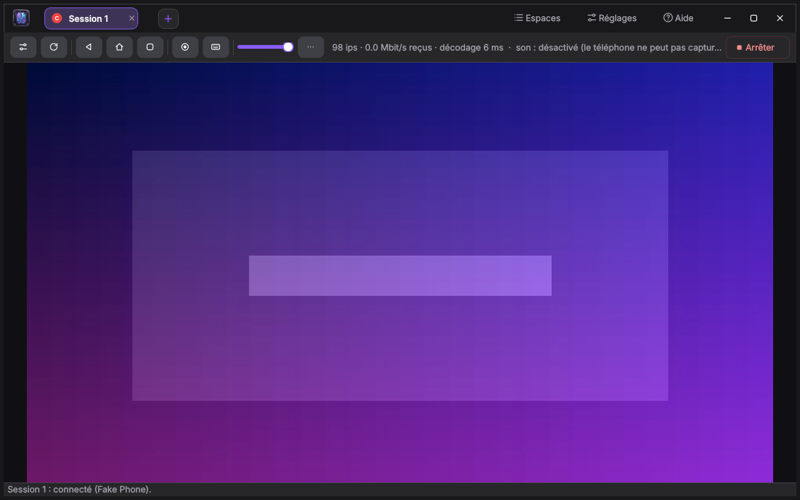
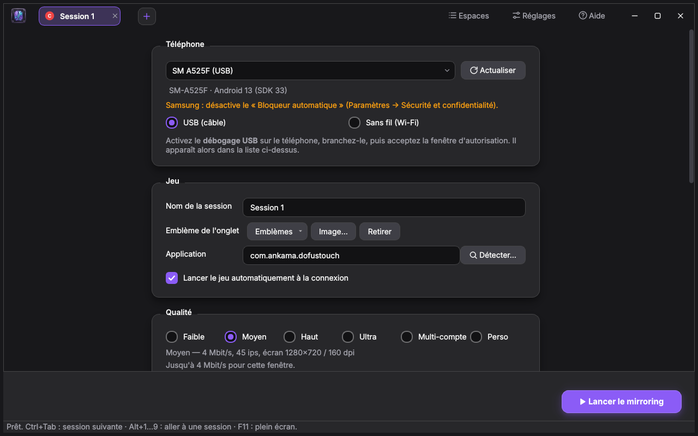
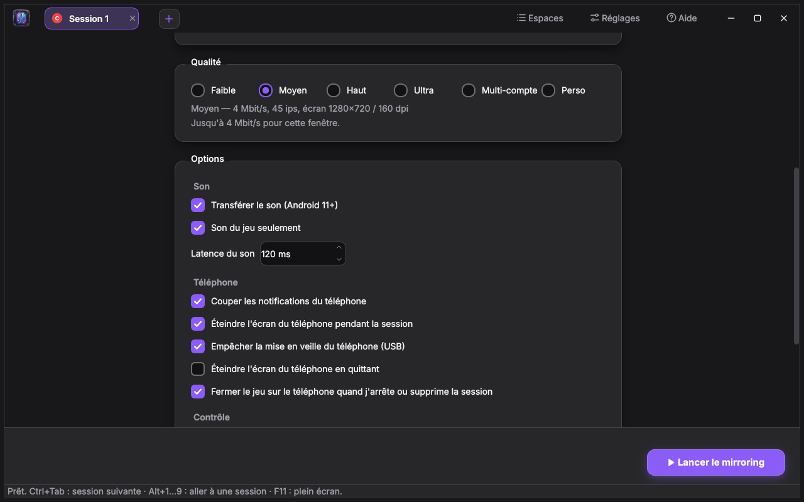

Ton téléphone Android, dans une fenêtre sur ton PC.
Joue à Dofus Touch en multi-comptes : une session par onglet, clavier et souris, par USB ou Wi-Fi. Gratuit, open source, rien à installer.

L'interface réelle de l'application. L'écran affiché ici est une image de démonstration.
Tout ce qu'il faut pour jouer sur plusieurs comptes
Le jeu tourne sur ton téléphone. notrefu-mirror affiche son écran dans une fenêtre et transmet tes clics et tes touches, comme une télécommande.
Un réglage clair, session par session
Choisis le téléphone, le nom, l'emblème de l'onglet et la qualité. Tout est enregistré, et les sessions se rouvrent comme tu les as laissées.
- Détection automatique des téléphones et tablettes
- Aide ciblée selon la marque (Samsung, Xiaomi/POCO, Oppo…)
- Lancement automatique du jeu à la connexion

Pense à ton téléphone
Les options protègent la batterie et la chauffe pendant les longues sessions.
- Éteindre l'écran du téléphone pendant la session
- Empêcher la mise en veille (USB) et couper les notifications
- Son du jeu seul, avec une latence réglable
- Fermeture du jeu à l'arrêt de la session

Clavier personnalisable
Associe des touches à des endroits de l'écran. Un appui envoie un seul tap, uniquement à la session au premier plan.
Reconnexion automatique
Si le lien coupe, la session se relance seule, avec des délais progressifs pour les appareils en veille.
Léger pour le PC
Décodage matériel quand il est disponible, sessions masquées sans dessin inutile, pas de navigateur intégré chargé au démarrage.
Santé du téléphone
Batterie, chauffe, stockage, CPU et RAM de l'appareil, avec alertes. Détail de la RAM au survol de la souris.
Captures et vidéo
Capture d'écran et enregistrement en un clic, directement depuis la barre d'outils de la session.
Vue en grille
Affiche plusieurs sessions côte à côte, avec des espaces enregistrés pour rouvrir un groupe de comptes.
Qualité vidéo selon ta connexion
Six préréglages, du plus économe au plus net. Chacun fixe le débit, les images par seconde et la taille de l'écran envoyé par le téléphone.
| Préréglage | Débit | Images / s | Écran | Pour qui |
|---|---|---|---|---|
| Faible | 2 Mbit/s | 30 | 960×540 | Wi-Fi limité, beaucoup de comptes |
| Moyen | 4 Mbit/s | 45 | 1280×720 | Bon compromis (par défaut) |
| Haut | 8 Mbit/s | 60 | 1920×1080 | Un ou deux comptes, USB |
| Ultra | 16 Mbit/s | 60 | 2560×1440 | Image la plus nette, USB recommandé |
| Multi-compte | 4 Mbit/s | 30 | 1280×720 | Plusieurs téléphones à la fois |
| Perso | au choix | au choix | au choix | Tes propres valeurs |
Télécharger
Aucune installation : un fichier à décompresser ou à lancer. Les versions sont publiées sur GitHub.
Windows
Version portable (zip), sans droits administrateur.
Télécharger le zip Windows- Décompresse le zip dans un dossier.
- Lance
notrefu-mirror.exe. - Si Windows affiche « Windows a protégé votre ordinateur », clique sur « Informations complémentaires » puis « Exécuter quand même » (la version n'est pas signée).
Linux
AppImage : un seul fichier, pensé pour Bazzite (KDE).
Télécharger l'AppImage- Rends le fichier exécutable :
chmod +x notrefu-mirror-*.AppImage - Lance-le :
./notrefu-mirror-*.AppImage - Si l'AppImage refuse de se monter, ajoute
--appimage-extract-and-run.
Questions fréquentes
Les réponses aux questions qui reviennent le plus.
Est-ce autorisé par Ankama ?
notrefu-mirror n'émule rien et ne modifie pas le jeu : l'application officielle tourne sur ton téléphone et l'écran est simplement affiché sur ton PC. Il n'y a aucune automatisation. Je ne peux toutefois pas garantir l'absence de sanction : Ankama reste seul juge de ses règles. En cas de doute, demande à son support.
Pourquoi mon téléphone n'apparaît pas ?
Vérifie que le débogage USB est activé, que le câble transmet bien les données (pas un câble de charge seule) et que tu as accepté la fenêtre d'autorisation sur le téléphone. Dans le menu Aide, le diagnostic affiche ce que l'application voit et propose une aide selon la marque.
Les clics sont ignorés sur mon Xiaomi / POCO.
Active « Débogage USB (Paramètres de sécurité) » dans les options pour les développeurs. Une carte SIM et un compte Mi sont requis par Xiaomi pour cette option.
Puis-je jouer sans fil ?
Oui, par le débogage sans fil d'Android (Wi-Fi). Le câble USB reste plus stable et permet la meilleure qualité ; la reconnexion automatique rattrape les coupures.
Mes réglages sont-ils conservés après une mise à jour ?
Oui. Les sessions, les touches personnalisées et le thème sont enregistrés, et ceux d'une ancienne version (MirrorDeck) sont repris automatiquement au premier lancement.
Pourquoi Windows ou mon antivirus se méfie-t-il ?
La version Windows n'est pas signée numériquement (la signature est payante). Le code est public sur GitHub et les fichiers publiés peuvent être vérifiés : tu peux aussi reconstruire l'application toi-même.
Respect des règles du jeu
notrefu-mirror ne fait aucune automatisation : pas de macro, pas de clic automatique, pas de lecture de l'écran du jeu, pas d'envoi d'une même touche à plusieurs comptes. Un clic ou une touche égale une action de ta part sur un seul compte.
Projet indépendant, non affilié à Ankama. Le jeu reste l'application officielle, non modifiée, sur ton téléphone.